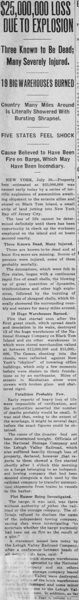
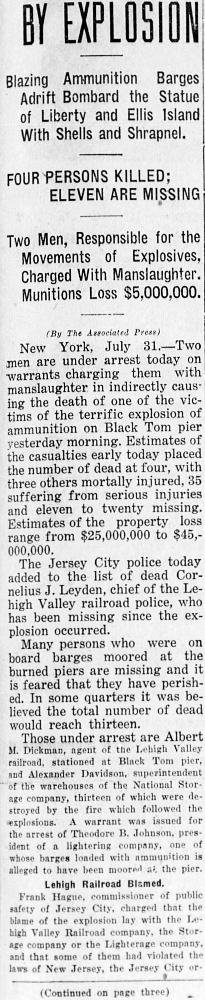
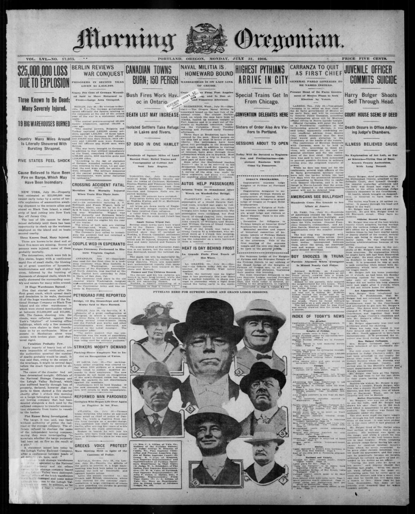
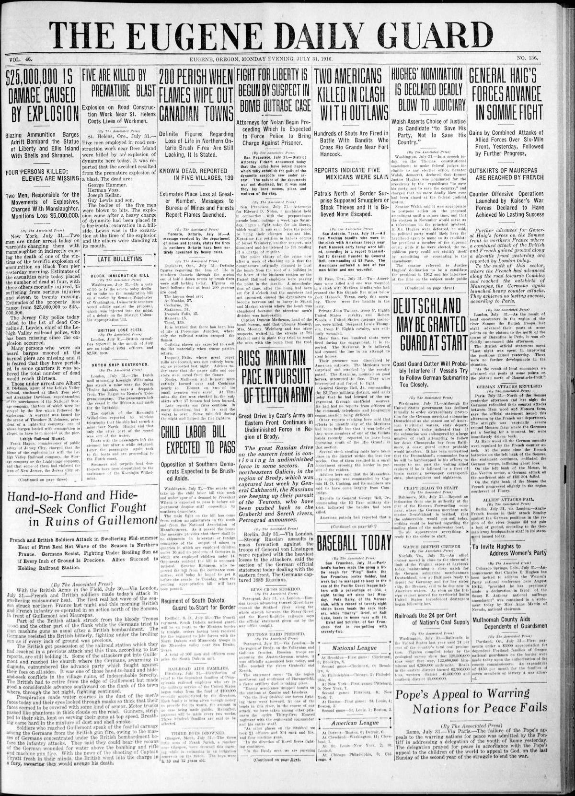

Black Tom ammunition depot explosion
New York Harbor, July 30-31, 1916 — contemporaneous newspaper reporting on the Black Tom Island munitions explosion, with two same-day accounts that printed different casualty and damage figures.
HN-403 · Event dates: July 30-31, 1916 · Location: Black Tom Island, New York Harbor (Jersey City, NJ) · Classification: Disasters, Accidents & Emergencies > Explosions, Industrial & Workplace Disasters > Explosives depots and munition blasts
What the newspapers reported (attributed)
At a glance: On the morning of July 30, 1916, a series of explosions destroyed ammunition stores on Black Tom Island, a small strip of land in New York Harbor off Jersey City. Newspapers printed differing casualty and damage estimates. These are contemporary reports — they record what newspapers said, not verified final figures.
- Morning Oregonian (Portland, OR), July 31, 1916 — reported three known dead and at least five missing, property loss estimated at $25 million. Dispatch datelined New York, July 30.
- Eugene Daily Guard (Eugene, OR), July 31, 1916 — reported four killed and eleven to twenty missing, with property damage estimates ranging from $25 million to $45 million.
These are different dispatch snapshots, not a proven deliberate contradiction. The Oregonian's dispatch is dated July 30, which helps explain why the next day's figures changed. No website language should imply deliberate deception or state a final casualty toll.
Original page scans (retrieved from the archive)
These are the actual scanned newspaper pages, retrieved from Historic Oregon Newspapers (University of Oregon) through the archive's IIIF image service. Article crops are cut using the archive's own ALTO OCR word coordinates, so each crop matches the transcribed article text exactly. No images were generated, mocked, or retouched. Scroll inside each frame to read; click through for full resolution.

Open article crop at full resolution · Full page

Open article crop at full resolution · Full page



Historic Oregon Newspapers (University of Oregon)
Archive viewer

Historic Oregon Newspapers (University of Oregon)
Archive viewer

Hoosier State Chronicles (Indiana State Library)
Archive viewer
Further pages from the same week, shown to make the reporting sequence visible: the first dispatch (July 30), the two July 31 accounts compared above, and continued coverage on August 1.
Side-by-side comparison (authentic OCR)
Both primary issue OCR pages were checked. Machine OCR is labeled as OCR; it has not been human-reviewed.
Reporting timeline (what they knew when)
Source acquisition
Provider: Historic Oregon Newspapers (University of Oregon)
Status: Source identity verified
Both primary issue OCR pages checked (Evidence tier A-direct). Five full-page scans and three article crops/clips are now retrieved from the holding archives and displayed above.
Status detail: page images downloaded directly from the archives' IIIF/image services; crop coordinates derived from each page's ALTO OCR file where available. Images are stored locally under site/assets/images/ and are unmodified archive derivatives — JPEG renditions of the archives' own scans.
Next action: Extend the same IIIF + ALTO procedure to the other accessible Historic Oregon Newspapers records (942 source URLs in the manifest).